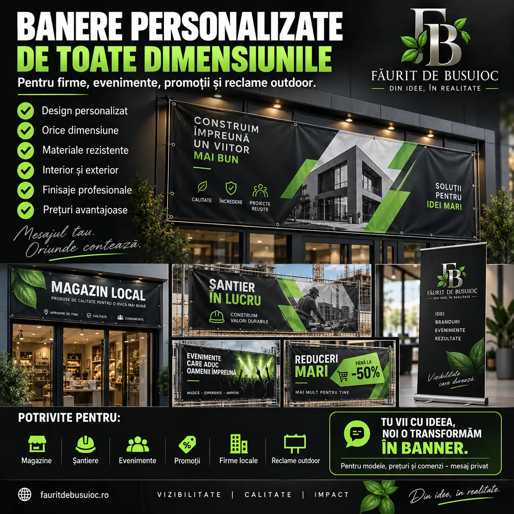
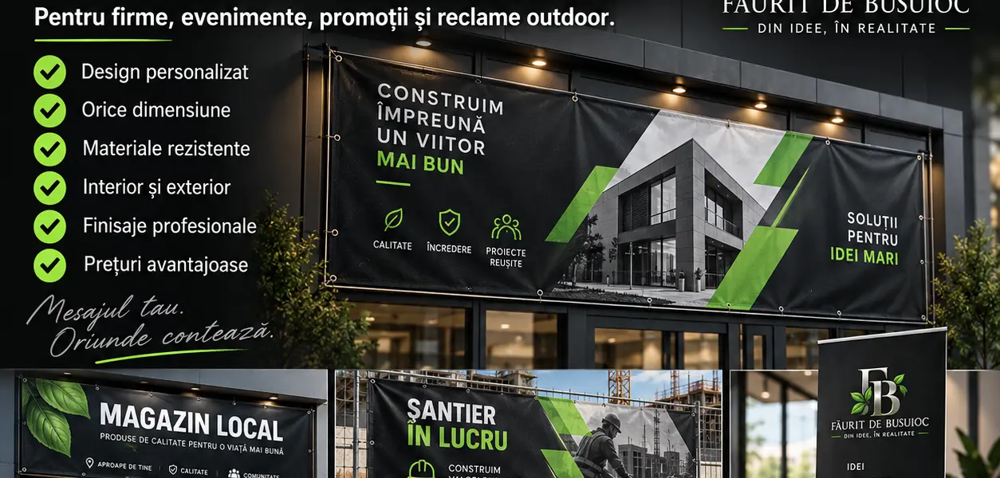
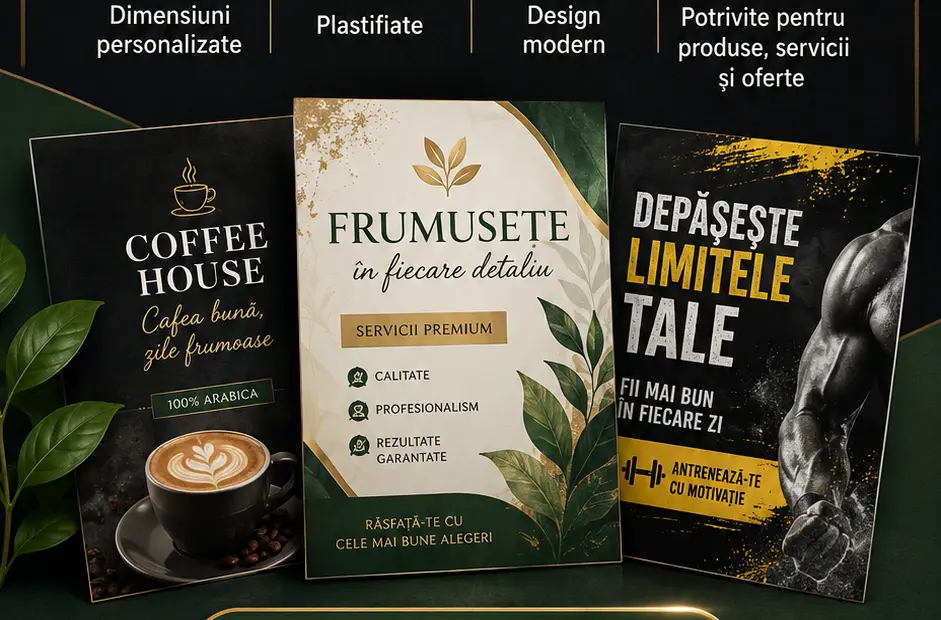
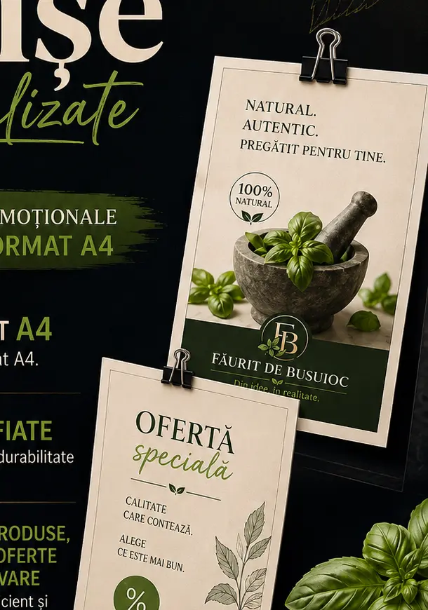

Bannere pentru exterior
Fațade, garduri, structuri, șantiere și reclamă vizibilă de la distanță.
Bannere și afișe personalizate pentru firme, magazine, șantiere, evenimente, promoții sau decor. Tu ne spui unde va fi folosit și ce dimensiune dorești, noi construim imaginea.

Formatul și materialul se aleg în funcție de amplasare, dimensiune și perioada de utilizare.
Fațade, garduri, structuri, șantiere și reclamă vizibilă de la distanță.
Formate standard sau dimensiuni speciale pentru orice mesaj.
Servicii, date de contact, program și comunicare comercială.
Reduceri, lansări, campanii și produse puse în evidență.
Anunțuri, fundaluri, zone foto, sponsori și programe.
Postere, meniuri, liste, colaje și materiale pentru spații interioare.

Așezăm logo-ul, imaginile, telefonul, website-ul și mesajul într-o compoziție ușor de citit și potrivită spațiului.

Pregătim afișul pentru spațiul unde va fi expus, de la formate uzuale până la dimensiuni realizate la comandă.
Exemple pentru exterior, șantiere și spații comerciale.
Spui dacă dorești banner sau afiș și unde va fi folosit.
Ne dai măsurile, textul, logo-ul, fotografiile și datele de contact.
Vezi designul și confirmi toate informațiile înainte de producție.
După aprobare stabilim materialul, finisarea, costul și termenul.
Putem porni de la un mesaj, câteva fotografii sau o schiță. Organizăm conținutul și pregătim designul pentru dimensiunea finală.

Măsurătorile și fotografia spațiului ne ajută să construim proporțiile corect.
Spune unde va fi amplasat și cât timp trebuie folosit pentru alegerea soluției potrivite.
Prinderile, tivul, capsele și alte finisaje se stabilesc în funcție de format și montaj.
Spune dacă dorești banner sau afiș, unde va fi folosit și ce trebuie să conțină. Discutăm designul și oferta pe WhatsApp.
Oferta se stabilește după dimensiune, material, finisare, design și cantitate. Nu sunt afișate prețuri fixe.